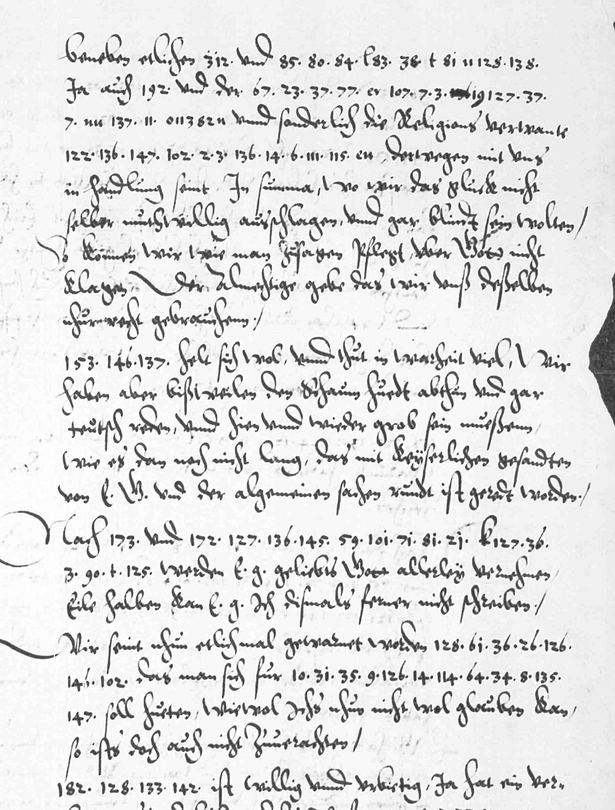
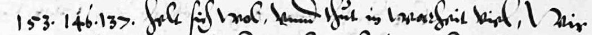
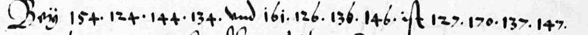

Private mock-up for review, 9 October 2026. Not published, not linked.
Dillenburg · 22 October 1573
The blanks in the Orange archives: who “holds well” with the Nassau brothers
Where the 1837 edition of William of Orange's letters left blanks, the cipher names the Elector Palatine as the one who “helt sich wol und thut in warheit viel”: holds well, and in truth does much.

Jan and Lodewijk van Nassau to William of Orange, Dillenburg, 22 Oct 1573, page 7: German in clear, names in numbers. Koninklijk Huisarchief, A 3, 895/I (WVO 5797).
Each line: the signs as written; then, when revealed, the German as read (the audited layer, every sign graded) and an English rendering (ours).
H read from a key sourceC from known plaintext or a period key tableS cryptanalytic, with a controlM uncertainI inferredU sign not covered by the keyclear written in clear on the page

German as read, sign by sign (grade under each)
PfaltzgrafH?U·Cheltclearsichclearwolclear
English (translation, interpretation)
[Pfaltzgraf] … helt sich wol, und thut in warheit viel
The Palsgrave (Elector Palatine) … holds well, and in truth does a great deal

German as read, sign by sign (grade under each)
BeyclearHerzog von SachsenC·C·C·CundclearLandgrafH·CuingtM?Uistclear
English (translation, interpretation)
Bey [Herzog von Sachsen] … und [Landgraf] … ist …
With the Duke of Saxony … and the Landgrave … is …
Faces
William of Orangeleader of the Dutch Revolt
in Holland; the letter is to him
Louis (Lodewijk) of NassauOrange's brother, soldier and diplomat
co-writes from Dillenburg
Jan of NassauOrange's brother, count at Dillenburg
co-writes; keeps the house
Frederick IIICalvinist Elector Palatine
“holds well” in the blank
Wilhelm IVLandgrave of Hesse-Kassel
named in the other blank
Groen van Prinsterereditor of the Orange archives
printed it, 1837, with blanks
Portraits pending: public-domain paintings from Wikimedia Commons were to go here; the Commons API refused this build (rate limit), so every face is a labelled placeholder, never a non-free image.
The moment
The Sea Beggars take Brielle; Holland rises for Orange.
Louis of Nassau seizes Mons.
From Dillenburg, Jan and Louis report to Orange which German princes will help.
Mookerheyde: Louis and his brother Henry are killed.
Groen van Prinsterer prints the letter, leaving the cipher passages blank.
Positions by latitude and longitude; no coastlines drawn.
The secret
Interpretation, not part of the audited reading
Our reading of the gist: in the brothers' survey of German support, the Palatine is the friend who acts. That the Palatine backed the Nassaus is long known (Kluckhohn, 1872); what the cipher adds is which name fills Groen's blank.
153 · 146 · 137 · helt sich wol
Try it
Three signs from the key. Guess, then tap.
153
tap to read it
Pfaltzgraf
grade H · period gloss on WVO 5550
161
tap to read it
Landgraf
grade H · period gloss on WVO 5550
58 · 85 · 38 · 95 · 82 · 35
tap to read it
zeuget
grade C · letter table; Groen's print
How we know
N4No prior decipherment located after the principal editions, catalogues and project pages were searched; internal or unpublished work not excluded.
D2 · about 11.1%Partially deciphered: at least one clause reads, and a verifier wrote one true, specific sentence about it.
Two audits26 Sept 2026 (first audit); 26 Sept 2026 (second, adversarial), each by a session other than the reader.
Grades of the 73 cipher signs read: H 3 · C 14 · M 44 · I 2 · U 10
HCMU
Whose key. Period and ours: a letter table we recovered from two sibling letters' contemporary decipherments (WVO 4613, 4615), with the two name codes from a contemporary interlinear gloss on WVO 5550. The rest of the letter is Groen van Prinsterer's print (Archives, 1st series, vol. IV, letter CDXLIV).
The audit's sentence. Two of the blanks Groen van Prinsterer left in WVO 5797 read in part; no prior decipherment of these blanks located (N4); the letter's other text is Groen's.
Page and line crops: Koninklijk Huisarchief, The Hague, A 3, 895/I, as served by the Huygens Institute (Willem van Oranje correspondence, letter 5797). Reuse terms not recorded in the repository; to be checked with the Huygens Institute and the Koninklijk Huisarchief before any publication. Private mock-up only. Portrait placeholders and map drawn for this mock-up. English renderings and gists are ours.